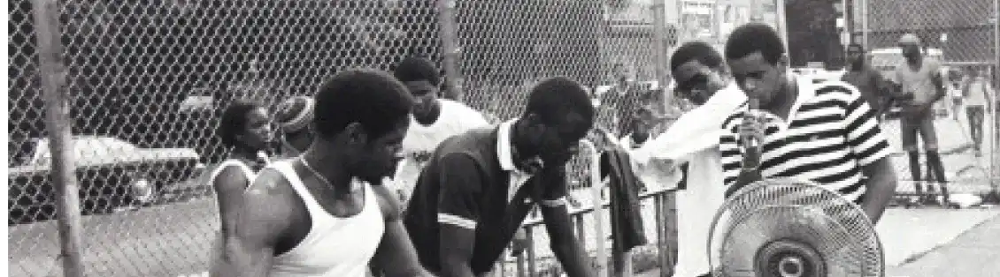
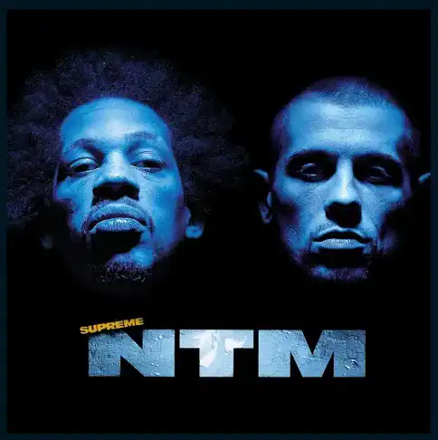
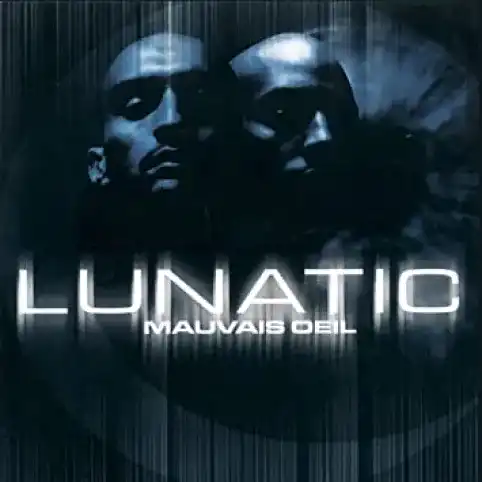

MASSILIA The Marseille of yesterday
Bad Boys
Listen the song :This sound is from the album Métèque et Mat, released in 1995, this album was not a success as AKH had known with the band IAM. Paradoxically to this «flop» several singles we knew hits like the sound «Bad Boys de Marseille Part.2». Used in particular by the Stade Vélodrome for training their players, the sound is a reference of the Marseille identityIn his single AKH describes the behaviour of the majority of Marseillais. He follows the musical trend of the time: R&B. Coming from rap Akhenaton knew how to make a place in French music. To make this track that will tour in loop on all the radios of the time AKH will invite his friend Shurik'n as well as the group Fonky Familily that emerges in Marseille music. From the beginning of the sound, you can immediately see a sound that is not usual at the time. The instrumental brings back the sun to the music. Then as usual Akhenaten opens the way with a verse that describes the context of the writing of his music.

For the chorus a woman is put forward with the group of man who sings in canon (back). The alternation of rap couplet and R&B chorus allowed a success. The fact of having recorded his album in New York he could have an opinion on the American mentality. The recording of the sound as well as the production of the clip was done in a humorous way, that is to say he mocks the aesthetics of American soap operas..Having musical tastes that have evolved, I became more interested in the music of the 90s especially hip hop. With for the first time a sound of IAM, which this group from Marseille represents the culture and mentality of Marseille, that is to say the sharing, the mix.

Suprême NTM, or simply NTM, is a French rap group. Originally from the department of Seine-Saint-Denis and composed mainly of two rappers, Joeystarr and Kool Shen.
Learn more on NTM

Lunatic is a French hip-hop duo from Hauts-de-Seine. The group was formed in 1994 by Booba and Ali.
Learn more on LUNATIC